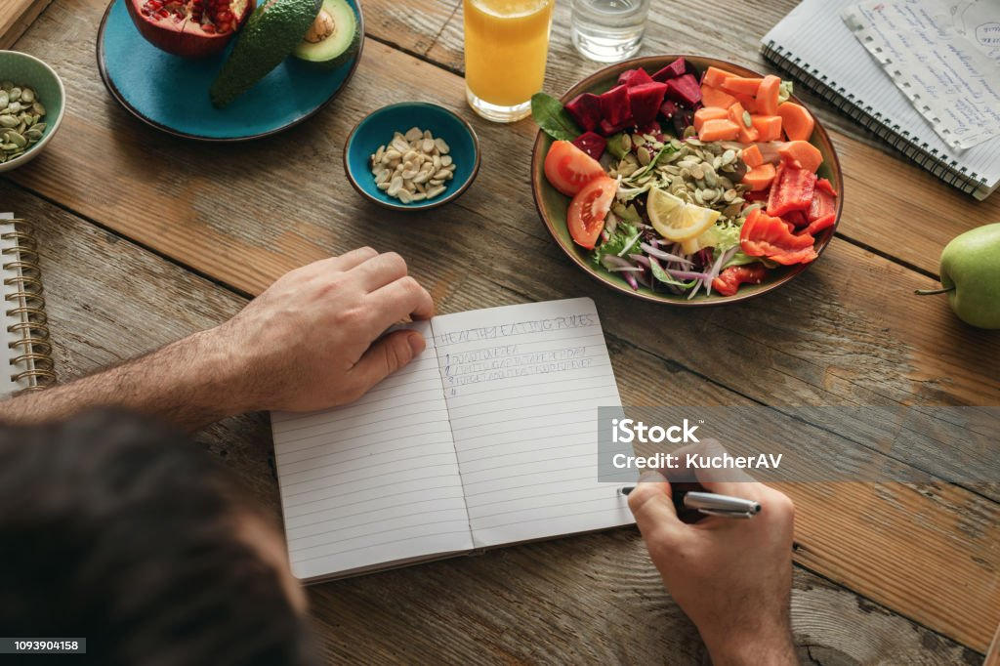
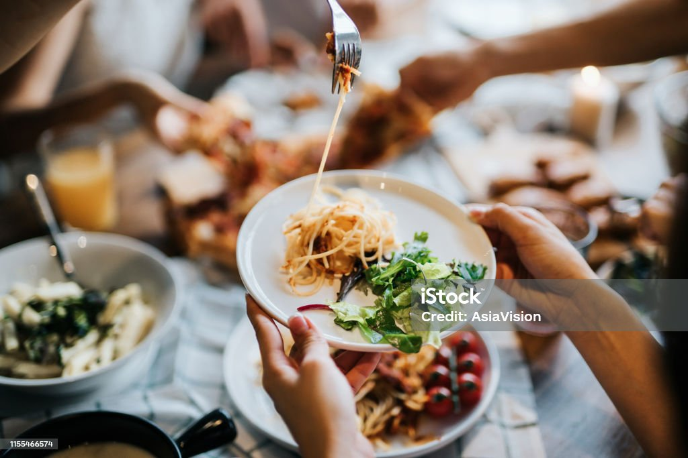
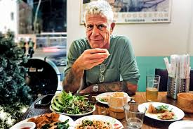
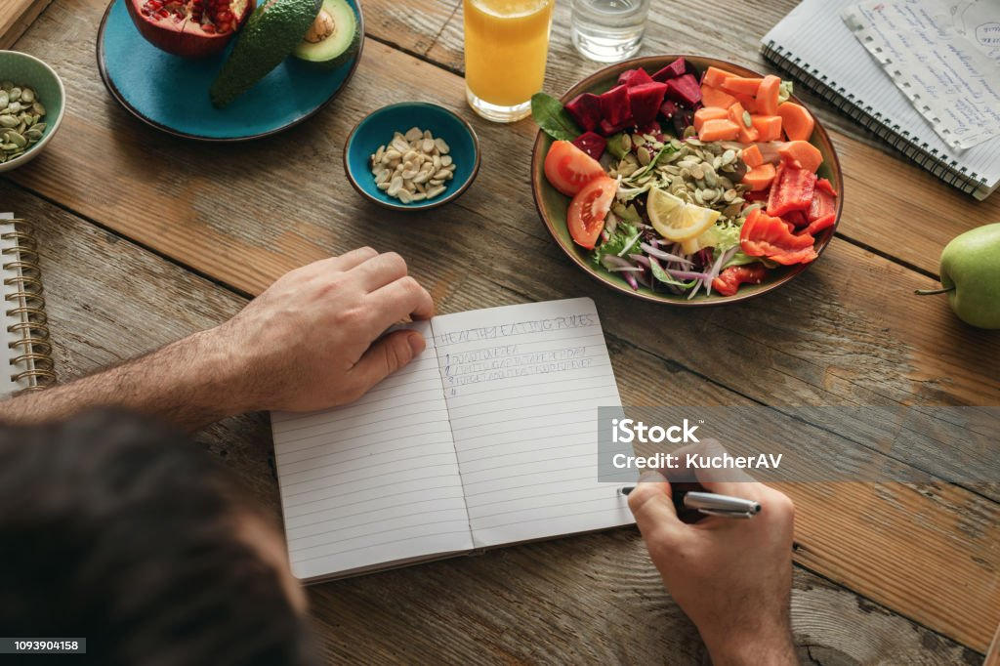

Eats
Art you can taste. That is the essence of cooking
When I offer to cook for someone, I always make sure to put all of my attentnion and care into anything I'm serving. Even if someone doesn't know you and you cook them a wonderful dish, they'll already have some type of respect for you because they judged you on an extension of yourself physically presented in front of them. I taste, therefore I cook. 
When I was just a young man with no hair on my chest, I would come home after school and watch Anthony Bourdain's "No Reservation". I never heard of this man before, or knew that he was a chef coming out of NYC.  But after watching him try everything there is to eat, and talking with the locals about origins on the local dishes, I looked at food differently. He had this punk-rock, New York attitude about him that stood against establishment but saw peace in food and cooking. He is no longer with us
Art you can taste. That is the essence of cooking
